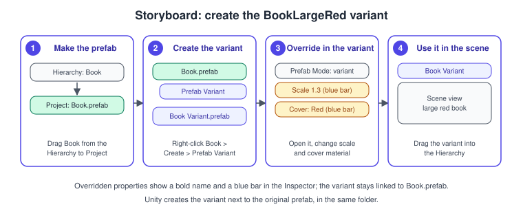
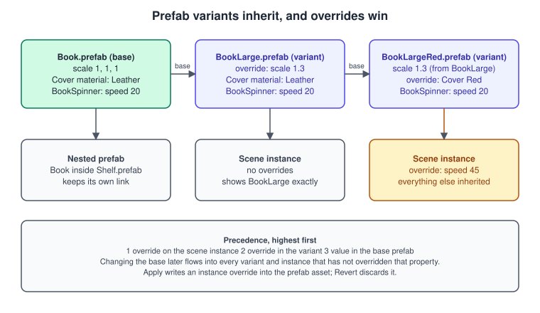
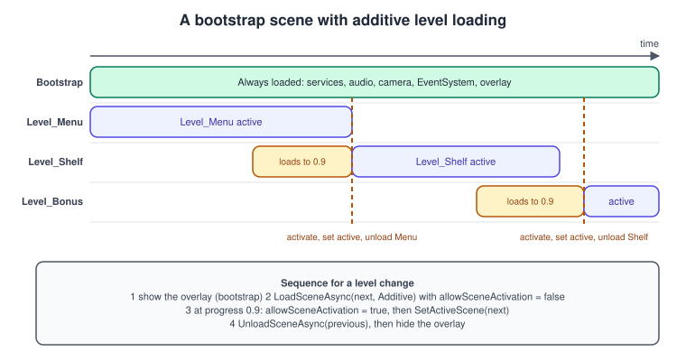

Prefabs and Scenes
|
This content was generated with the assistance of AI and should be verified against the official documentation before being relied on in production. |
A Unity project is built from two reusable units: the prefab, a GameObject (with its children and components) saved as an asset so that it can be placed many times, and the scene, a container that holds the GameObjects of a
level, a menu or a manager. Prefabs answer "how do I make a hundred copies of this and still change them all at once"; scenes answer "how do I split my game into loadable parts". This page covers both, in the order in which
you meet them in the Bookshelf project: the Book prefab and its variants, spawning books from code, and the scenes that hold the shelf, the menu and the managers.
The facts were checked in November 2026 against the documentation of Unity 6.3 LTS (6000.3), the version documented in this section; Unity 6.6 (6000.6) is the latest supported release. The Editor steps apply to the Windows, macOS and Linux Editors; the runtime code works on every platform. The example is the Bookshelf on the URP 3D template; the shared model is bookshelf.glb, imported as one shelf with nine book nodes. The prerequisite is the component model of GameObjects, Components and Transforms; the general idea of a scene as a tree of objects is in Scene Graphs and Asset Formats.
What a prefab is
A prefab is an asset file (.prefab) that stores a GameObject hierarchy, its components and their serialized values. Placing a prefab in a scene creates a prefab instance: a normal GameObject that stays linked to the asset.
Edit the asset and every instance changes, except for the properties that the instance has overridden.
| Term | Meaning |
|---|---|
Prefab asset |
The file in the Project window. It is edited in Prefab Mode and never plays by itself. |
Prefab instance |
A GameObject in a scene (or inside another prefab) that remembers which prefab it came from. Shown in the Hierarchy with a blue cube icon. |
Override |
A value, component or child on an instance that differs from the asset. Shown with a bold name and a blue bar next to the property in the Inspector. |
Prefab variant |
A prefab whose base is another prefab. It inherits everything and stores only its own overrides. |
Nested prefab |
A prefab instance that lives inside another prefab. It keeps its link to its own asset. |
Unpack |
Cuts the link, turning an instance into plain GameObjects (the asset stays). |
Source: Unity Manual: Prefabs
Prefabs matter for three reasons: consistency (one book design), memory and load time (instances share the asset’s mesh and material references), and teamwork (the prefab file is the unit that people review and merge, instead of an entire scene file). A scene that contains hundreds of unrelated, copy-pasted objects is the usual sign of prefabs not being used.
Creating the Book prefab
-
Build the object once in the scene: an empty parent named
Bookwith the book mesh (imported from the shared model) as a child, aBoxCollider, and theBookSpinnerof C# Scripting and the MonoBehaviour Lifecycle. -
Drag the
Bookobject from the Hierarchy into a folder of the Project window, for exampleAssets/Prefabs. Unity createsBook.prefab, and the object in the scene turns into an instance of it (blue cube icon). -
Delete the original from the scene if you want to place books from the prefab asset only, or leave one instance as a sample.
-
Double-click
Book.prefab(or select the instance and choose the arrow beside it in the Hierarchy) to open Prefab Mode: the asset is shown alone in its own stage, with a breadcrumb at the top of the Scene view to go back. -
Make changes to the asset there and save. Every instance in every scene picks the change up.
Source: Unity Manual: Create prefabs

Overrides: instance against asset
An instance can change almost anything the asset defines: a value on a component, a whole component, a child object. Those differences are overrides, and the Inspector marks them. The two commands you use every day are:
-
Revert discards the override and returns to the asset’s value (per property, per component, or for the whole instance).
-
Apply writes the instance’s change into the prefab asset, so that every other instance gets it.
An instance can also remove a component that came from the asset (Unity records it as a removed-component override). The structure of the prefab, on the other hand, is owned by the asset: to reorder or reparent the prefab’s own children, open Prefab Mode.
Unity keeps overrides it can no longer use (for example for a component you later deleted from the asset) as unused overrides, and offers to clean them up.
Variants
A prefab variant is a prefab whose parent is another prefab. It is the way to make "the same thing with a few differences" without copying: a small book, a red book, a book with a different spinner speed. The variant stores only the differences. Edit the base later, and the variant follows, except where it overrode that property.

To create one:
-
In the Project window, right-click the prefab and choose Create > Prefab Variant. Unity creates
Book Variant.prefabin the same folder; rename it, for example toBookLarge. -
Open the variant in Prefab Mode. Its root appears as an instance of the base prefab; everything you change is stored as an override of the base.
-
Create further variants by repeating the steps on a variant: a variant can have any prefab, including another variant, as its base.
-
Alternatively, drag an instance that already has overrides from the Hierarchy into the Project window. Unity asks whether to create a new original prefab or a variant, and a variant keeps the overrides.
The Inspector shows the parent of a variant and, in a menu, the chain of bases and the variants that depend on it. Use that menu before deleting a base.
Variants are a useful place to keep structure differences (a different mesh, an extra collider) and a ScriptableObject is the better place to keep data differences (titles, page counts, colours). The Bookshelf combines
both: a BookData asset per title and a handful of variants per physical shape, as described in ScriptableObjects and Data-Driven Design.
Nested prefabs
A prefab can contain other prefabs. The Shelf prefab contains nine Book instances and a DeskLamp instance; each of those keeps its own link, so editing Book.prefab still updates the books inside the shelf, and the
shelf only stores where they are and what is overridden. Add a nested prefab by dragging a prefab asset into the open prefab (in Prefab Mode or from the Hierarchy). Unity records the addition as an override of the outer
prefab, marked with a green plus icon; apply it to make it permanent.
Prefabs cannot contain themselves (directly or through a chain), so a layout like "a shelf that holds a shelf" needs a separate prefab.
Unpacking
Unpack (right-click the instance, Prefab > Unpack) turns an instance into ordinary GameObjects and removes the link; any overrides are kept in the result. It unpacks one level only: nested prefabs stay prefab instances, and unpacking a variant leaves an instance of its base whose differences are stored as overrides. Unpack when a one-off object has outgrown its prefab; do not use it to "fix" an override that should be applied or reverted.
Instantiating and destroying at runtime
An instance placed in the scene in the Editor exists from the start. To create books while the game runs, a script holds a reference to the prefab asset in a [SerializeField] field and calls Instantiate. The call
copies the asset (or any other object) with its components and children, runs Awake and OnEnable on the copy, and returns it.
using UnityEngine;
namespace Bookshelf
{
public class BookSpawner : MonoBehaviour
{
[SerializeField] private GameObject bookPrefab; // drag the Book prefab asset here
[SerializeField] private Transform[] slots;
[SerializeField] private Transform bookParent; // keeps the Hierarchy tidy
private void Start()
{
foreach (Transform slot in slots)
{
// position, rotation and parent in one call: no extra transform change after creation
GameObject book = Instantiate(bookPrefab, slot.position, slot.rotation, bookParent);
book.name = "Book_" + slot.name;
}
}
// Typed overload: instantiating a component returns the component, so no GetComponent is needed.
public BookSpinner SpawnSpinning(Vector3 position, BookSpinner spinnerPrefab)
{
BookSpinner spinner = Instantiate(spinnerPrefab, position, Quaternion.identity, bookParent);
return spinner;
}
public void Remove(GameObject book, float delaySeconds = 0f)
{
// Destruction happens at the end of the frame (or after the delay), never immediately.
Destroy(book, delaySeconds);
}
}
}Points to remember:
-
The reference must be to the prefab asset, not to an instance in the scene. Instantiating an instance still works but copies it without the link to the asset and with all its runtime state.
-
Typing the field as a component (
BookSpinner) is safer thanGameObject: the Inspector then only accepts prefabs that contain that component. -
Instantiateis not free: it allocates, deserializes and runsAwakeandOnEnableon every component of the copy. Spawn many objects at start-up, or useInstantiateAsync, or pool them (see below). -
Destroyis deferred to the end of the frame. The object is still non-null in the same frame; in later frames it compares equal tonull(see C# Scripting and the MonoBehaviour Lifecycle).DestroyImmediateis for editor code only. -
The
PrefabUtilityclass (for examplePrefabUtility.InstantiatePrefab, which keeps the link to the asset) exists only in the Editor and cannot be used in a build. -
Changes made to an instance during Play Mode are discarded when you stop. Changes made to the asset itself from code are not saved in a build.
InstantiateAsync
InstantiateAsync spreads the cost of creating many copies across frames: most of the work happens off the main thread, and only the last stage (integration into the scene and the Awake calls) runs on the main thread.
using UnityEngine;
namespace Bookshelf
{
public class BookRain : MonoBehaviour
{
[SerializeField] private BookSpinner bookPrefab;
[SerializeField] private int count = 200;
private async void Start()
{
// Snapshot the prefab and create 'count' copies in the background.
AsyncInstantiateOperation<BookSpinner> op = InstantiateAsync(bookPrefab, count);
await op; // completes when the copies are in the scene
foreach (BookSpinner book in op.Result)
book.transform.position = Random.insideUnitSphere * 3f + new Vector3(0f, 6f, 0f);
}
}
}For objects that appear and disappear constantly (falling books in "Shelve-it", particles, bullets), neither call is the answer: keep a pool of inactive instances and reuse them, with UnityEngine.Pool.ObjectPool as
described in Project Architecture and Design Patterns and measured in Profiling and Optimization.
Scenes
A scene is an asset (.unity) that stores a set of GameObjects and the scene-wide settings (lighting, skybox, navigation data). At runtime, the Scene is also a loaded unit that you can load, unload and query. Unity can
have several scenes loaded at once; exactly one of them is the active scene, which is where new objects created from code go by default and whose lighting settings apply.
The Scene List
A scene must be in the build’s Scene List to be loaded by build index or name in a player. Open File > Build Profiles, select a profile, choose Add Settings > Scene List if the profile does not
override the list yet, then use Add Open Scenes or drag scenes in; the order of the list is the build index. Scenes can be excluded without removing them. Loading a scene that is not in the list, for example with
SceneManager.LoadScene("Level_Shelf"), fails with an error in Play Mode as well as in a build.
Single and additive loading
SceneManager.LoadScene and LoadSceneAsync take a LoadSceneMode:
| Mode | Behaviour |
|---|---|
|
Unloads every loaded scene, then loads the new one. Objects not marked |
|
Loads the scene in addition to the current ones. Nothing is destroyed. Unload it later with |
LoadScene blocks the frame until the scene is ready, which is a visible hitch for anything larger than a menu. LoadSceneAsync returns an AsyncOperation and loads in the background over several frames; progress runs from 0 to
0.9 while the data loads, and the operation completes (progress 1) when the scene is activated. Setting allowSceneActivation = false holds the operation at 0.9 so that you can show a loading screen, finish other work and then activate.
While one operation is held that way, later operations in the queue (such as an unload) wait behind it.
A bootstrap scene
A common structure keeps one small bootstrap scene that is always loaded and holds what must outlive every level: an audio manager, the EventSystem, a loading overlay, and a camera. Levels are loaded additively on top of it and
unloaded when replaced, so those objects never need DontDestroyOnLoad.

using System.Collections;
using UnityEngine;
using UnityEngine.SceneManagement;
namespace Bookshelf
{
/// <summary>Lives in the Bootstrap scene. Loads levels additively and keeps one active level.</summary>
public class LevelLoader : MonoBehaviour
{
[SerializeField] private string firstLevel = "Level_Menu";
[SerializeField] private CanvasGroup loadingOverlay;
private Scene currentLevel;
private bool busy;
private void Start()
{
SceneManager.sceneLoaded += OnSceneLoaded;
StartCoroutine(SwitchTo(firstLevel));
}
private void OnDestroy() => SceneManager.sceneLoaded -= OnSceneLoaded;
private void OnSceneLoaded(Scene scene, LoadSceneMode mode)
{
// Called after OnEnable and before Start of the objects in 'scene'.
Debug.Log($"Loaded {scene.name} ({mode})");
}
public void Load(string levelName)
{
if (!busy) StartCoroutine(SwitchTo(levelName));
}
private IEnumerator SwitchTo(string levelName)
{
busy = true;
loadingOverlay.alpha = 1f;
AsyncOperation load = SceneManager.LoadSceneAsync(levelName, LoadSceneMode.Additive);
load.allowSceneActivation = false;
while (load.progress < 0.9f) // 0.9 means "loaded, waiting for activation"
yield return null;
load.allowSceneActivation = true;
while (!load.isDone) yield return null;
Scene next = SceneManager.GetSceneByName(levelName);
SceneManager.SetActiveScene(next); // lighting settings and new objects use it
if (currentLevel.IsValid())
yield return SceneManager.UnloadSceneAsync(currentLevel);
currentLevel = next;
loadingOverlay.alpha = 0f;
busy = false;
}
}
}The same sequence reads more directly with Awaitable, because AsyncOperation is awaitable; see
C# Scripting and the MonoBehaviour Lifecycle.
The pattern needs three things to be set up in the Editor: the bootstrap scene is first in the Scene List (build index 0), the levels are listed after it, and during development you can open any level on its own and still have the managers if the level contains (or loads) a bootstrap object. A small component in each level that loads the bootstrap scene additively when it is missing makes every level playable on its own.
DontDestroyOnLoad
Object.DontDestroyOnLoad(target) keeps an object alive across a Single load. It works only for root GameObjects (or components on root GameObjects), and Unity then also preserves the children. The object moves to a
special scene that is not unloaded. It is simple, but it hides global state and, when domain reload is disabled in the Editor, can leave a second copy alive in Play Mode. The bootstrap scene is the cleaner alternative.
Editing several scenes
In the Editor, you can have several scenes open at once: drag a scene from the Project window into the Hierarchy, or right-click a scene and choose Open Scene Additive. Each scene appears as a group in the Hierarchy and GameObjects belong to exactly one of them. This is how a large level is split between artists (geometry, lighting, gameplay) in separate files that never conflict. Lighting data is baked per scene set, and the active scene supplies the lighting settings (see Shadows and Global Illumination and Materials, Textures and Lighting).
Common mistakes
-
Scene not in the Scene List: the load fails with an error that names the scene. Add every loadable scene to the list.
-
Loading by index across refactors: re-ordering the Scene List changes the indices. Load by name or path, or keep the names in a ScriptableObject.
-
Holding a reference to a scene object from a prefab asset: a prefab asset cannot reference an object in a scene. Pass the reference after instantiating, or find it at run time.
-
Overriding everything: an instance that overrides most properties of its prefab should be a variant, or a separate prefab. Many overrides make changes to the base hard to predict.
-
Editing prefab instances in a scene and forgetting Apply when the change was meant for all of them (or applying one that was meant for one).
-
Instantiating in
Updatewithout a pool; the garbage collector pays for it later. -
Not setting the active scene after an additive load: new objects and the lighting settings still come from the old scene.
-
Setting
allowSceneActivationfromAwake: Unity advises against it, becauseAwakeruns once and synchronously; use a coroutine or an async method. -
Destroying the object that runs the loading coroutine (for example the scene’s own object) before the load finishes: the coroutine stops.
Performance notes
-
Instantiate a prefab with its parent and position in the same call, so the transform is not changed (and a physics or layout recalculation triggered) after creation.
-
Prefabs with many components and children are slow to instantiate; keep gameplay prefabs small and put static decoration in the scene.
-
Use
InstantiateAsyncfor batches andUnityEngine.Pool.ObjectPoolfor churn. -
Additive loading lets you load small pieces ahead of time and keep a menu responsive; a
Singleload also unloads unused assets, which has a cost. -
Many tiny scenes have per-scene overhead; many huge scenes are slow to load. Split by what loads together.
-
Content that is loaded and unloaded on demand, including prefabs and scenes from remote storage, is the topic of Assets, Addressables and Content.
What changed recently
| Version | Change |
|---|---|
Unity 6.0 |
Build Settings replaced by Build Profiles; the Scene List lives there, and a profile uses the global list unless it overrides it. |
Unity 6 |
|
Unity 6.3 LTS |
Documented version; per-profile build settings arrive for build profiles. |
Unity 6.5 |
Objects are identified by the 64-bit |
Where the books are outdated
UIA means Unity in Action, 3rd edition (Joseph Hocking, Manning, 2022, for Unity 2020.3 LTS). It covers prefabs and scenes in chapters 3, 5 and 12, before Unity 6. The concepts (prefabs, instances,
Instantiate, SceneManager) are unchanged; the windows and some calls moved.
| In UIA | In Unity 6.3 LTS and later | What to do |
|---|---|---|
File > Build Settings to list scenes (chapter 12) |
File > Build Profiles, with a Scene List per profile |
Use the Scene List steps above |
Unity 2020.3 has no |
Available in Unity 6 |
Use it for batches of copies |
Menu paths, Inspector layouts and screenshots of 2020.3 |
Prefab Mode, overrides and variants look and behave as described here, with updated menus |
Follow the steps on this page and the linked manual pages |
Loading levels with |
Still works; additive loading with a bootstrap scene is the usual alternative in larger games |
Choose by project size |
See also
-
Scene Graphs and Asset Formats (the general concept of scenes and hierarchies)
References
-
Unity Manual, prefabs: https://docs.unity.com/en-us/engine/6000.3/manual/working-with-gameobjects/prefabs
-
Unity Manual, create prefabs: https://docs.unity.com/en-us/engine/6000.3/manual/working-with-gameobjects/prefabs/creating
-
Unity Manual, override prefab instances: https://docs.unity.com/en-us/engine/6000.3/manual/working-with-gameobjects/prefabs/override/prefab-instance-overrides
-
Unity Manual, create variations of prefabs: https://docs.unity.com/en-us/engine/6000.3/manual/working-with-gameobjects/prefabs/prefab-variants
-
Unity Manual, nest prefab instances in other prefabs: https://docs.unity.com/en-us/engine/6000.3/manual/working-with-gameobjects/prefabs/nested
-
Unity Manual, revert a prefab instance to a GameObject: https://docs.unity.com/en-us/engine/6000.3/manual/working-with-gameobjects/prefabs/unpacking-prefab-instances
-
Unity Manual, scenes: https://docs.unity.com/en-us/engine/6000.3/manual/working-with-scenes
-
Unity Manual, creating, loading and saving scenes: https://docs.unity.com/en-us/engine/6000.3/manual/working-with-scenes/scenes-working-with
-
Unity Manual, work with multiple scenes: https://docs.unity.com/en-us/engine/6000.3/manual/working-with-scenes/multi-scene-editing
-
Unity Manual, manage scenes in a build: https://docs.unity.com/en-us/engine/6000.3/manual/building-and-publishing/build-settings/build-profile-scene-list
-
Unity Scripting API, Object.Instantiate: https://docs.unity.com/en-us/engine/6000.3/script-reference/unityengine/object/instantiate
-
Unity Scripting API, Object.InstantiateAsync: https://docs.unity.com/en-us/engine/6000.3/script-reference/unityengine/object/instantiateasync
-
Unity Scripting API, SceneManager.LoadSceneAsync: https://docs.unity.com/en-us/engine/6000.3/script-reference/unityengine/scenemanagement/scenemanager/loadsceneasync
-
Unity Scripting API, AsyncOperation.allowSceneActivation: https://docs.unity.com/en-us/engine/6000.3/script-reference/unityengine/asyncoperation/allowsceneactivation
-
Unity Scripting API, Object.DontDestroyOnLoad: https://docs.unity.com/en-us/engine/6000.3/script-reference/unityengine/object/dontdestroyonload
-
Unity Manual, What’s new in Unity 6.5: https://docs.unity.com/en-us/engine/6000.5/manual/whats-new/unity65
-
Joseph Hocking, Unity in Action, 3rd edition, Manning: https://www.manning.com/books/unity-in-action-third-edition